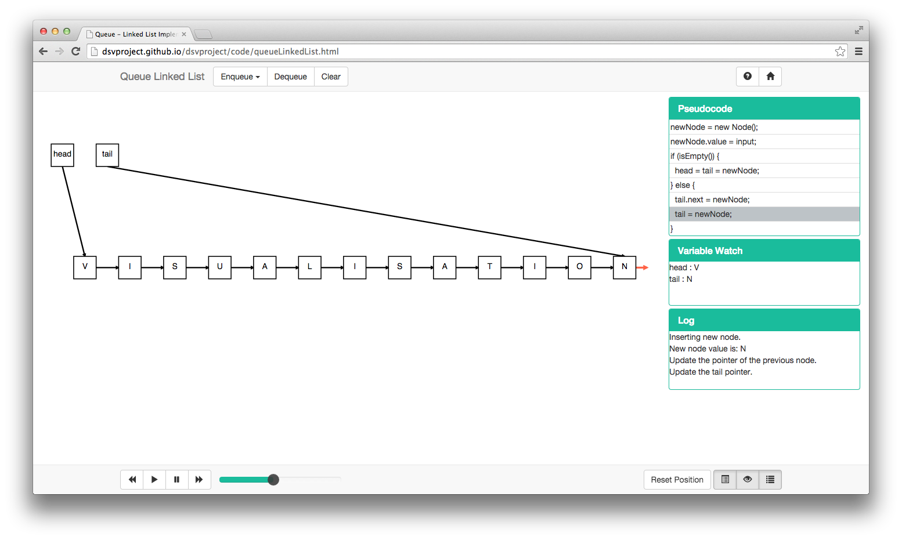
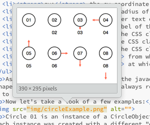
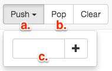

Getting started
Overview of the framework, its contents, and how to get started with it.
1. The Framework
This framework serves as a base to implement Data Structure Visualisations. It will provide tools to create graphic items, animate and manage them. It was built in a way that a person who wants to build a new visualisation doesn't need to have knowledge about SVG or D3.
The objects were designed following the practices of Object Oriented Programming, which is familiar to many programmers, making the use of this kit easier.
The classes are meant to be used only to control the graphic part of the visualisation. The algorithms, internal structures, etc. must be keep a layer above, but don't worry about that now, it will all be explained next.
1.1. File Structure
You've cloned the project to your computer and now what? Let's understand how the framework directories are organised:
DSVProject/ ├── code/ │ ├── bootstrap/ │ ├── d3/ │ ├── js/ │ │ ├── algorithms/ │ │ │ ├── template.js │ │ │ ├── visualisation JS files │ │ ├── framework/ │ │ │ ├── CoreObject.js │ │ │ ├── squareObject.js │ │ │ ├── circleObject.js │ │ │ ├── edgeObject.js │ │ │ ├── userObject.js │ │ │ ├── svg.js │ │ │ ├── constant.js │ │ ├── custom/ │ │ │ ├── Custom shapes and sets of shapes JS files │ │ ├── Other JS files │ ├── bootstrap/ │ ├── css/ │ │ ├── animation.css │ │ ├── Other CSS files │ ├── index.html │ ├── template.html │ ├── Visualisatons HTML files ├── documentation/ │ ├── userGuide/ │ │ ├── css/ │ │ ├── js/ │ │ ├── img/ │ │ ├── userGuide.html │ ├── .doc files └── readme
Although it might look complex there's only 3 folders that you should worry about
- code/ : where you'll place your visualisation .html file.
- algorithms/ : where you'll place your visualisation .js file.
- custom/ : in case you decided to create a new shape or set of shapes using the existing basic ones.
The .css file that controls the styling of the shapes if called animation.css.
2. The Basic Items
Each item on the screen will be an instance of one of these items, for example, an array will be a combination of Squares positioned side by side, while a node will be a combination of a Square with an Edge. For this reason let's take a look on each of them to understand how they're meant to be used.
2.1. Square Object
The square is one of the basic shapes (in SVG know as rect) and here's how it will look on the screen:
As you noticed by the annotations on the image this object is composed of 3 elements: a shape, an inner text and a label (the last two being optional) but we'll get into this a little ahead.
2.1.1. Constructor and Parameters
The class is called SquareObject, and to create an instance of a class in javascript all you have to do is the same that you would do in any other OO language:
var newObj = new SquareObject(coreObj, id, x, y, text, label, shapeClass, textClass, labelClass, outgoingPoint, incomingPoint);
Now let's understand all those parameters:
- coreObj: this parameter is the reference to the instance of CoreObject; as you will see later on, CoreObject is responsible to keep track of all existing objects. With this reference, this object will be able to interact with the others if needed (for example in the Learning Mode).
- id: an unique identifier for this instance.
- x: the x coordinate of this object inside the svg container.
- y: the y coordinate of this object inside the svg container.
- text: the inner text of this object (b. on the image above).
- label: the label of this object (c. on the image above).
- shapeClass: the CSS class of the shape SVG element.
- textClass: the CSS class of the text SVG element.
- labelClass: the CSS class of the text SVG element.
- outgoingPoint: from which point of the shape edges will originate.
- incomingPoint: at which point in the shape edges will arrive.
As you will be able to notice in the javadoc, some of this parameters are not obligatory (like text, label, classes), making it easy to customise a shape. Regarding the classes, it is always recommended to send "null" as parameter since all instances will inherit a default class, unless you would like it to have a different look.
Now let's take a look of a few examples:
Square 01 is an instance of a SquareObject without a label, while Square 02 have one. All the other Squares have an EdgeObject associated with them, where each instance was created with a different "outgoingPoint" parameter, which means that when the pointer is null (in here indicated by the color red) it will point into a different direction. When leaving from the bottom, if the SquareObject has a label, the Edge will take this into consideration (as seen in Square 08).
2.1.2. Fields
These fields will store all the important data regarding this instance.
2.1.2.1. Core
this.coreObj = coreObj;
Store the reference to coreObj parameter.
2.1.2.2. Offset Values
this.textAdjustX = defaultProperties.width / 2; this.textAdjustY = defaultProperties.height / 1.75; this.labelAdjustY = defaultProperties.height + 30;
When drawing the properties onto the screen, the inner text and the label may need some positioning adjustments, which will be stored in these.
2.1.2.3. Property Map
this.propObj = {
"id": id,
"shape": {
"class": shapeClass,
"x": x,
"y": y,
"width": defaultProperties.width,
"height": defaultProperties.height,
"fill": defaultProperties.shape.default.fill,
"fillOpacity": defaultProperties.shape.default["fill-opacity"],
"stroke": defaultProperties.shape.default.stroke,
"strokeWidth": defaultProperties.shape.default["stroke-width"]
},
"text": {
"class": textClass,
"x": x + this.textAdjustX,
"y": y + this.textAdjustY,
"fill": defaultProperties.text.default.stroke,
"fontFamily": defaultProperties["font-family"],
"fontWeight": defaultProperties["font-weight"],
"fontSize": defaultProperties["font-size"],
"textAnchor": defaultProperties["text-anchor"],
"text": text
},
"label": {
"class": labelClass,
"x": x + this.textAdjustX,
"y": y + this.labelAdjustY,
"text": label
},
"toRemove": false,
"isValidTarget": false,
"outgoingPoint": outgoingPoint != null ? outgoingPoint : EDGE_POSITION.CENTER,
"incomingPoint": incomingPoint != null ? incomingPoint : EDGE_POSITION.CENTER
}
This is the most important field of this object. It is a property map that will store all the data regarding the shape, the text, the label and other variables used for functionality. When drawing this object on the screen these values will be taken into consideration.
But as you might have noticed there's two properties in there that doesn't seem quite like "graphical", and you're right. "toRemove" is a Boolean flag that will signalise if this object shall be deleted when the next drawing occur while "isValidTarget" is used for the Learning Mode. You'll see more about this later on.
2.1.2.4. Edges
this.edgeList = [];
This is an array that will contain all the instances of EdgeObject that are binded to this object.
2.1.3. Methods
Let's first take a look at all the methods from this class:
this.getAttributes = function () {...}
this.getEdges = function () {...}
this.getID = function () {...}
this.setShapeClass = function (newClass) {...}
this.getShapeClass = function () {...}
this.moveShape = function (x, y) {...}
this.getCoordinateX = function () {...}
this.getEdgeCoordinateX = function (inout) {...}
this.getCoordinateY = function () {...}
this.getEdgeCoordinateY = function (inout) {...}
this.setWidth = function (newWidth) {...}
this.getWidth = function () {...}
this.setHeight = function (newHeight) {...}
this.getHeight = function () {...}
this.setFill = function (newFill) {...}
this.setFillOpacity = function (newOpacity) {...}
this.setStroke = function (newStroke) {...}
this.setStrokeWidth = function (newStrokeWidth) {...}
this.setText = function (newText) {...}
this.getText = function () {...}
this.setTextClass = function (newClass) {...}
this.getTextClass = function () {...}
this.setFontColor = function (newColor) {...}
this.setLabel = function (newLabel) {...}
this.setLabelClass = function (newClass) {...}
this.getLabelClass = function () {...}
this.setToRemove = function (bool) {...}
this.getToRemove = function () {...}
this.setIsValidTarget = function (bool) {...}
this.getIsValidTarget = function () {...}
this.setOutgoingPoint = function (newValue) {...}
this.getOutgoingPoint = function () {...}
this.setIncomingPoint = function (newValue) {...}
this.getIncomingPoint = function () {...}
this.addEdge = function (edgeObj) {...}
this.draw = function (dur) {...}
this.remove = function (dur) {...}
this.cloneObject = function () {...}
this.cloneProperties = function (prop) {...}
this.cloneEdges = function (edges) {...}
this.createPlaceHolder = function (allowSwap) {...}
Most of them are just getters and setters for the property map, but others require special attention. So let's understand them.
2.1.3.1. Add Edge
This method will add an instance of EdgeObject to this object edgeList[]. Edges are always stored in the origin object, even if the edge is bidirectional.
2.1.3.2. Draw and Remove
The Draw method will get the data from the property map and bind it to HTML elements created with D3, making them appear on the screen or update the looks of an existing object.
The Remove method will delete the HTML elements, removing the object from the screen.
2.1.3.3. GetEdgeCoordinate
An EdgeObject is the representation of the Line SVG element, which goes from point (x1,y1) to point (x2,y2). When getting these coordinates this function will be called, returning them while taking into consideration the properties of this object.
2.1.3.4. Cloning
Cloning objects is very important in the way this framework was designed and this will become clearer after we study the CoreObject. There is one main function that calls two subfunctions:
this.cloneObject = function () {
var clone = new SquareObject(this.coreObj);
clone.cloneProperties(this.propObj);
clone.cloneEdges(this.edgeList);
return clone;
}
Which calls:
this.cloneProperties = function (prop) {
this.propObj = clone(prop);
}
this.cloneEdges = function (edges) {
var newList = [];
var clone;
for (var key in edges) {
clone = new EdgeObject(this.coreObj);
clone.cloneProperties(edges[key].getAttributes());
newList[key] = clone;
}
this.edgeList = newList;
}
These functions create an exact clone of the current instance, without memory references, what will enable the animation to happen step by step.
When creating a clone, you have to create a new instance of the current object (SquareObject in this case) and the only parameter required is coreObj. The subfunctions will take care of copying the property map and the edge array.
2.1.3.5. Place holders (Learning Mode)
This method is only important when creating a visualisation with Learning Mode enabled. If this object is classified as a valid target for the Learning Mode interaction a place holder will be created with behavourial functions to be called responding to user actions, making changes to this and other object properties.
2.2. Circle Object
The circle is one of the basic shapes and here's how it will look on the screen:

As you noticed by the annotations on the image this object is composed of 3 elements: a shape, an inner text and a label (the last two being optional) but we'll get into this a little ahead.
2.2.1. Constructor and Parameters
The class is called CircleObject, and to create an instance of a class in javascript all you have to do is the same that you would do in any other OO language:
var newObj = new CircleObject(coreObj, id, cx, cy, radius, text, label, shapeClass, textClass, labelClass, outgoingPoint, incomingPoint);
Now let's understand all those parameters:
- coreObj: this parameter is the reference to the instance of CoreObject; as you will see later on, CoreObject is responsible to keep track of all existing objects. With this reference, this object will be able to interact with the others if needed (for example in the Learning Mode).
- id: an unique identifier for this instance.
- cx: the cx coordinate of this object inside the svg container.
- cy: the cy coordinate of this object inside the svg container.
- radius: the radius of this object.
- text: the inner text of this object (b. on the image above).
- label: the label of this object (c. on the image above).
- shapeClass: the CSS class of the shape SVG element.
- textClass: the CSS class of the text SVG element.
- labelClass: the CSS class of the text SVG element.
- outgoingPoint: from which point of the shape edges will originate.
- incomingPoint: at which point in the shape edges will arrive.
As you will be able to notice in the javadoc, some of this parameters are not obligatory (like text, label, classes), making it easy to customise a shape. Regarding the classes, it is always recommended to send "null" as parameter since all instances will inherit a default class, unless you would like it to have a different look.
Now let's take a look of a few examples:
Circle 01 is an instance of a CircleObject without a label, while Circle 02 have one. All the other Circles have an EdgeObject associated with them, where each instance was created with a different "outgoingPoint" parameter, which means that when the pointer is null (in here indicated by the color red) it will point into a different direction. When leaving from the bottom, if the CircleObject has a label, the Edge will take this into consideration (as seen in Circle 08).
2.2.2. Fields
These fields will store all the important data regarding this instance.
2.2.2.1. Core
this.coreObj = coreObj;
Store the reference to coreObj parameter.
2.2.2.2. Offset Values
this.textAdjust = defaultProperties["font-size"]/3; this.labelAdjust = defaultProperties.radius + 30;
When drawing the properties onto the screen, the inner text and the label may need some positioning adjustments, which will be stored in these.
2.2.2.3. Property Map
this.propObj = {
"id": id,
"shape": {
"class": shapeClass,
"cx": cx,
"cy": cy,
"r": radius,
"fill": defaultProperties.shape.default.fill,
"fillOpacity": defaultProperties.shape.default["fill-opacity"],
"stroke": defaultProperties.shape.default.stroke,
"strokeWidth": defaultProperties.shape.default["stroke-width"]
},
"text": {
"class": textClass,
"x": cx,
"y": cy + this.textAdjust,
"fill": defaultProperties.text.default.stroke,
"fontFamily": defaultProperties["font-family"],
"fontWeight": defaultProperties["font-weight"],
"fontSize": defaultProperties["font-size"],
"textAnchor": defaultProperties["text-anchor"],
"text": text
},
"label": {
"class": labelClass,
"x": cx,
"y": cy + this.labelAdjust,
"text": label
},
"toRemove": false,
"isValidTarget": false,
"outgoingPoint": (outgoingPoint != null) ? outgoingPoint : EDGE_POSITION.CENTER,
"incomingPoint": (incomingPoint != null) ? incomingPoint : EDGE_POSITION.CENTER
}
This is the most important field of this object. It is a property map that will store all the data regarding the shape, the text, the label and other variables used for functionality. When drawing this object on the screen these values will be taken into consideration.
But as you might have noticed there's two properties in there that doesn't seem quite like "graphical", and you're right. "toRemove" is a Boolean flag that will signalise if this object shall be deleted when the next drawing occur while "isValidTarget" is used for the Learning Mode. You'll see more about this later on.
2.2.2.4. Edges
this.edgeList = [];
This is an array that will contain all the instances of EdgeObject that are binded to this object.
2.2.3. Methods
Let's first take a look at all the methods from this class:
this.getAttributes = function () {...}
this.getEdges = function () {...}
this.getID = function () {...}
this.setShapeClass = function (newClass) {...}
this.getShapeClass = function () {...}
this.moveShape = function (x, y) {...}
this.getCoordinateCX = function () {...}
this.getEdgeCoordinateX = function (inout) {...}
this.getCoordinateCY = function () {...}
this.getEdgeCoordinateY = function (inout) {...}
this.setRadius = function (newRadius) {...}
this.getRadius = function () {...}
this.setFill = function (newFill) {...}
this.setFillOpacity = function (newOpacity) {...}
this.setStroke = function (newStroke) {...}
this.setStrokeWidth = function (newStrokeWidth) {...}
this.setText = function (newText) {...}
this.getText = function () {...}
this.setTextClass = function (newClass) {...}
this.getTextClass = function () {...}
this.setFontColor = function (newColor) {...}
this.setLabel = function (newLabel) {...}
this.setLabelClass = function (newClass) {...}
this.getLabelClass = function () {...}
this.setToRemove = function (bool) {...}
this.getToRemove = function () {...}
this.setIsValidTarget = function (bool) {...}
this.getIsValidTarget = function () {...}
this.setOutgoingPoint = function (newValue) {...}
this.getOutgoingPoint = function () {...}
this.setIncomingPoint = function (newValue) {...}
this.getIncomingPoint = function () {...}
this.addEdge = function (edgeObj) {...}
this.draw = function (dur) {...}
this.remove = function (dur) {...}
this.cloneObject = function () {...}
this.cloneProperties = function (prop) {...}
this.cloneEdges = function (edges) {...}
this.createPlaceHolder = function (allowSwap) {...}
Most of them are just getters and setters for the property map, but others require special attention. So let's understand them.
2.2.3.1. Add Edge
This method will add an instance of EdgeObject to this object edgeList[]. Edges are always stored in the origin object, even if the edge is bidirectional.
2.2.3.2. Draw and Remove
The Draw method will get the data from the property map and bind it to HTML elements created with D3, making them appear on the screen or update the looks of an existing object.
The Remove method will delete the HTML elements, removing the object from the screen.
2.2.3.3. GetEdgeCoordinate
An EdgeObject is the representation of the Line SVG element, which goes from point (x1,y1) to point (x2,y2). When getting these coordinates this function will be called, returning them while taking into consideration the properties of this object.
2.2.3.4. Cloning
Cloning objects is very important in the way this framework was designed and this will become clearer after we study the CoreObject. There is one main function that calls two subfunctions:
this.cloneObject = function () {
var clone = new CircleObject(this.coreObj);
clone.cloneProperties(this.propObj);
clone.cloneEdges(this.edgeList);
return clone;
}
Which calls:
this.cloneProperties = function (prop) {
this.propObj = clone(prop);
}
this.cloneEdges = function (edges) {
var newList = [];
var clone;
for (var key in edges) {
clone = new EdgeObject(this.coreObj);
clone.cloneProperties(edges[key].getAttributes());
newList[key] = clone;
}
this.edgeList = newList;
}
These functions create an exact clone of the current instance, without memory references, what will enable the animation to happen step by step.
When creating a clone, you have to create a new instance of the current object (SquareObject in this case) and the only parameter required is coreObj. The subfunctions will take care of copying the property map and the edge array.
2.2.3.5. Place holders (Learning Mode)
This method is only important when creating a visualisation with Learning Mode enabled. If this object is classified as a valid target for the Learning Mode interaction a place holder will be created with behavourial functions to be called responding to user actions, making changes to this and other object properties.
2.3. Edge Object
The edge (in SVG knows as line) is one of the basic elements, used to connect two shapes. It might also have a marker element, in case the edge needs to be directed.

There are three types of edges:
- Undirected (a): connect the two shapes, without any specified direction.
- Unidirectional (b): connect the two shapes, in this case from 02 to 03.
- Bidirectional (c): connect the two shapes, in both directions.
Although and EdgeObject is connecting two shapes it only belongs to the edgeList[] as we've mentioned earlier. This happens for two reasons: it makes the management of edges easier for the developer and during the drawing operations it will avoid redundancy.
2.3.1. Constructor and Parameters
The class is called EdgeObject, and to create an instance of a class in javascript all you have to do is the same that you would do in any other OO language:
var newObj = new EdgeObject(coreObj, id, idObjectA, idObjectB, edgeClass, edgeType);
Now let's understand all those parameters:
- coreObj: this parameter is the reference to the instance of CoreObject; as you will see later on, CoreObject is responsible to keep track of all existing objects. With this reference, this object will be able to interact with the others if needed (for example in the Learning Mode).
- id: an unique identifier for this instance.
- idObjectA: the id of the origin object.
- idObjectB: the id of the destination object. If null a small edge will be created following the orientation of the origin point (as seen in the square and circle examples).
- edgeClass: the CSS class of the line svg element.
- edgeType: indicates wether the edge is unidirectional (from A -> B), bidirectional or has no direction.
As you will be able to notice in the javadoc, some of this parameters are not obligatory (like idObjectB, class), making it easy to customise an edge. Regarding the class, it is always recommended to send "null" as parameter since all instances will inherit a default class, unless you would like it to have a different look.
2.3.2. Fields
These fields will store all the important data regarding this instance.
2.3.2.1. Core
this.coreObj = coreObj;
Store the reference to coreObj parameter.
2.3.2.3. Property Map
this.propObj = {
"id": id,
"idObjectA": idObjectA,
"idObjectB": idObjectB,
"type": edgeType,
"markerStart": defaultProperties.marker.null.start,
"markerEnd": defaultProperties.marker.null.end,
"edge": {
"class": edgeClass,
"x1": null,
"y1": null,
"x2": null,
"y2": null,
"stroke": defaultProperties.edge.default.stroke,
"strokeWidth": defaultProperties.edge.default["stroke-width"]
}
}
This is the most important field of this object. It is a property map that will store all the data regarding the edge and other variables used for functionality. When drawing this object on the screen these values will be taken into consideration.
2.3.3. Methods
Let's first take a look at all the methods from this class:
this.getAttributes = function () {...}
this.getID = function () {...}
this.getIdObjectA = function () {...}
this.setIdObjectA = function (newID) {...}
this.getIdObjectB = function () {...}
this.setIdObjectB = function (newID) {...}
this.getType = function () {...}
this.setType = function (newType) {...}
this.setMarkerStart = function (newMarker) {...}
this.setMarkerEnd = function (newMarker) {...}
this.setEdgeClass = function (newClass) {...}
this.getCoordinateX1 = function(){...}
this.getCoordinateY1 = function(){...}
this.getCoordinateX2 = function(){...}
this.getCoordinateY2 = function(){...}
this.setStroke = function (newStroke) {...}
this.setStrokeWidth = function (newStrokeWidth) {...}
this.calculatePath = function () {...}
this.draw = function (dur) {...}
this.remove = function (dur) {...}
this.cloneProperties = function (prop) {...}
Most of them are just getters and setters for the property map, but others require special attention. So let's understand them.
2.3.3.1. setIdObjectA
As we've mentioned earlier the instance of this object is added to ObjectA's edgeList[], so when changing this object (in a tree rotation for example) a special function will be called, that will take care of removing the edge from the old object edgeList[] and adding it to the new one.
2.3.3.2. Draw and Remove
The Draw method will get the data from the property map and bind it to HTML elements created with D3, making them appear on the screen or update the looks of an existing object.
The Remove method will delete the HTML elements, removing the object from the screen.
2.2.3.3. calculatePath
An EdgeObject is the representation of the Line SVG element, which goes from point (x1,y1) to point (x2,y2). This points are determined by the two objects which this edge is connecting. When this class is instantiated, or any of the two objects is changed, this function will be called getting the coordinates needed.
2.2.3.4. Cloning
Cloning objects is very important in the way this framework was designed and this will become clearer after we study the CoreObject. Here is the cloning function for this object:
this.cloneProperties = function (prop) {
this.propObj = clone(prop);
this.calculatePath();
}
Shapes that possesses edges will call this function when cloning their edges. This will return a deep copy of this object properties, without the memory references.
2.4. User Object
2.5. Managing all this: Core Object
2.6. An important file: Constant.js
3. Creating a New Visualisation
Now that you know all the items of the framework it's time to create your own Data Structure Visualisation.
In this section you'll see what you have to do to achieve this. But before we begin we would like to recommend a developing tool: Brackets.
Brackets as described in its own website is an open source code editor for web designers and front-end developers. We've used it for the entire development of this tool and found it to be very productive. A few points that we would like to mention:
- Frequent sprints: every four weeks or so a new version of the software is released, with new functionalities and improvements.
- Code completion: not only for html tags, but your file tree. When inserting files this really come in handy.
- Nice organisation: once you select your working folder it will show your file tree in the sidebar, and a quick access to recently open files.
- Quick edit: make changes to functions and styles without even leaving your current working file!
-

Preview of images inside the code.
-

See the output style while coding.
- Live preview: brackets offers a live preview using Google Chrome, making it possible to see the changes as you code them.
- Customisation: it has support to themes you can make it look the way you want, with different colors to syntax highlight in a way that you won't have to get used to a new pattern.
- It is free.

See the contents of a function and make changes on the go.
3.1. The two files
In most cases you will only have to create two files: an HTML and a JavaScript. This will only be different if you decide to create a custom shape or set of shapes, which will take another JavaScript file.
3.1.1. HTML
To create the HTML file of your data structure visualisation the first thing you have to do is to copy the template.html provided and rename it to fit the data structure. In you'll find the following lines:
<!-- Template: Page Title --> (line 7)
<!-- Template: Visualisation Title --> (line 37)
<!-- Template: Method's buttons --> (line 42)
<!-- Template: Text input button (methods that require an input value) --> (line 45)
<!-- Template: Textbox id, for future reference --> (line 52)
<!-- Template: onclick function --> (line 55)
<!-- Template: Normal button (methods that don't require an input value) --> (line 64)
<!-- Template: Learning Mode Button (If not available comment this button tag) --> (line 69)
<!-- Template: Your Visualisation Scripts --> (line 208)
// Template: Your js file instance and calls to methods. (line 212)
Below each of them you'll find the code that needs to be adapted for the new page.
3.1.1.1 The Buttons
For the methods in our visualisations we only use two kinds of buttons: with (a) and without (b) text input.
If a method requires an input, a text box (c) will appear, an the method will be executed after pressing the button. If no input is required the method will be executed immediatly.
Below you'll find the html code for each type of button:
- With text input:
<div class="btn-group">
<!-- Template: Text input button (methods that require an input value) -->
<button type="button" class="btn btn-default navbar-btn dropdown-toggle" data-toggle="dropdown">
Method Name <span class="caret"></span>
</button>
<ul class="dropdown-menu" role="menu">
<form class="navbar-form">
<div class="input-group">
<!-- Template: Textbox id, for future reference -->
<input id="txt-input" type="text" class="form-control">
<span class="input-group-btn">
<!-- Template: onclick function -->
<button class="btn btn-default" type="button" onclick="">
<span class="glyphicon glyphicon-plus"></span>
</button>
</span>
</div>
</form>
</ul>
</div>
<!-- Template: Normal button (methods that don't require an input value) --> <button type="button" class="btn btn-default navbar-btn" onclick="">Method Name</button>
There is a third type of button that in most cases will be commented, unless you're also going to develop a learning mode for the current visualisation.
Here is how its code looks like:
<!-- Template: Learning Mode Button (If not available comment this button tag) --> <!-- <button type="button" id="chk-learn" class="btn btn-default navbar-btn popover-dismiss" data-toggle="button" data-popover="popover" data-html="true" data-placement="bottom" title="Learning Mode" data-content="Use this switch to toggle between the <b>Exploration</b> and the <b>Learning</b> modes.<br/><br/>In Exploration mode animations will happen automatically.<br/>In Learning mode you will have to create the final state of each method.">Learning Mode</button> -->
To make it visible just remove the comment tags (<!-- -->).
3.1.1.2 The scrips
The last thing to be changed in the html file is the scripts. You will have to make reference to the new file and create calls to your methods. For this example we're going to use the StackArray.html file.
<!-- Template: Your Visualisation Scripts -->
<script src="js/algorithms/stackArray.js"></script>
<script type="text/javascript">
var stack = new StackArray();
var core = stack.getCore();
function push () {
var input = $("#txt-input");
stack.push(input.val());
input.val("");
}
function pop () {
stack.pop();
}
function empty () {
stack.init();
}
// DEFAULT METHODS. DO NOT REMOVE.
function previous () {
core.previous();
}
function play () {
core.play();
}
function pause () {
core.pause();
}
function next () {
core.next();
}
function undo () {
core.undo();
}
function redo () {
core.redo();
}
</script>
As you can see in the visualisation above we've referenced our algorithm file in line 2. Then we'll have to create a new instance of our class (line 5). An important method that every algorithm js file should have is this:

This method is called in line 6, and will allow us to call the default media control methods (from line 23 until the end of the script).
Other than that you should create calls for the methods in your class, sending inputs if required, making use of the ids defined on the creation of the html buttons (line 9).
3.1.2. JavaScript
To create the JS file of your data structure visualisation we recommend that you use the template.js file provided as it follows some guidelines of our framework. Here's how it looks like:
/**
* Defines a Pointer object, that contains:
* {Number} value
* {Object} drawing : an instace of one of the basic shapes (squareObject, nodeObject, etc)
* {Object} edge : an instace of the edgeObject
*/
var Pointer = function () {
var value;
var drawing;
var edge;
}
/**
* Defines a Stack object (Array implementation). Used to keep track of the object internally and to interact with the animations.
*/
var Template = function(){
var self = this;
var coreObj = new CoreObject();
// ARRAY TO STORE LEARNING MODE OBJECTS
var learnObj = [];
// CONSTANTS FOR PSEUDOCODE GENERATION
const PUSH = 0,
POP = 1;
// CREATE INITIAL ITEMS IF ANY
coreObj.newStateList();
coreObj.saveState();
var cap = 16;
var top = new Pointer();
var mArray = [];
for (var i=0; i<16; i++){
mArray[i] = coreObj.newSquareObject(i, (i+1)*50, 300, null, i, null, null, null, null, EDGE_POSITION.TOP);
}
top.value = 0;
top.drawing = coreObj.newSquareObject("top", 50, 50, 0, "top", null, null, null, EDGE_POSITION.BOTTOM, null);
top.edge = coreObj.newEdgeObject("top", top.drawing.getID(), mArray[top.value].getID(), null, EDGE_TYPE.UNIDIRECTIONAL);
top.edge.setMarkerEnd(defaultProperties.marker.default.end);
coreObj.saveState();
coreObj.play(0);
// DEFAULT METHODS
this.getCore = function () {
return coreObj;
}
this.generatePseudocode = function (command) {
coreObj.clearPseudocode();
switch (command) {
case PUSH:
coreObj.addPseudocodeLine(lineNo, "Instruction");
break;
case POP:
coreObj.addPseudocodeLine(lineNo, "Instruction");
break;
}
}
// PARTICULAR METHODS
this.init = function() {...}
this.isEmpty = function () {...}
this.push = function (item) {...}
this.pop = function () {...}
}
Now let's understand what's happening in there.
3.1.2.1. Organising the data and the graphics
As we've seen when studying CoreObject each graphic object created is returned to this class, enabling any necessary graphic changes.
3.1.2.2. Default variables
There are only four default variables that have to be declared:
- this.self: current value of this, useful for scope issues.
- this.coreObj: the instance of CoreObject.js, that will create objects and control the animation.
- this.learnObj: optional, used to store Learning Mode objects.
- Constants: values used to create the apropriate pseudocode set.
3.1.2.3. Initial Items
In certain visualisations some initial graphic elements may be necessary. For example, in an Array implementation you'll have to display the array itself.
To achieve this you'll have to create all these items in here as this lines of code will execute as this class is instantiated and the graphics will be displayed as soon as the page load.
3.1.2.4. Default Methods
The two important default methods are:
- this.getCore: this method will return the instance of CoreObject.js to the HTML file.
- this.generatePseudocode: this method will fill the pseudocode panel when executing a method.
3.1.2.5. Particular Methods
Any method related to this data structure, that will be called from the HTML file.